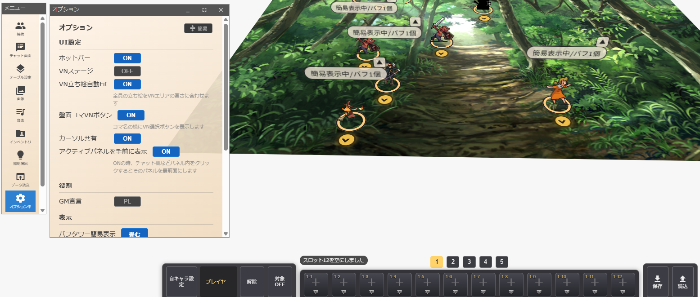
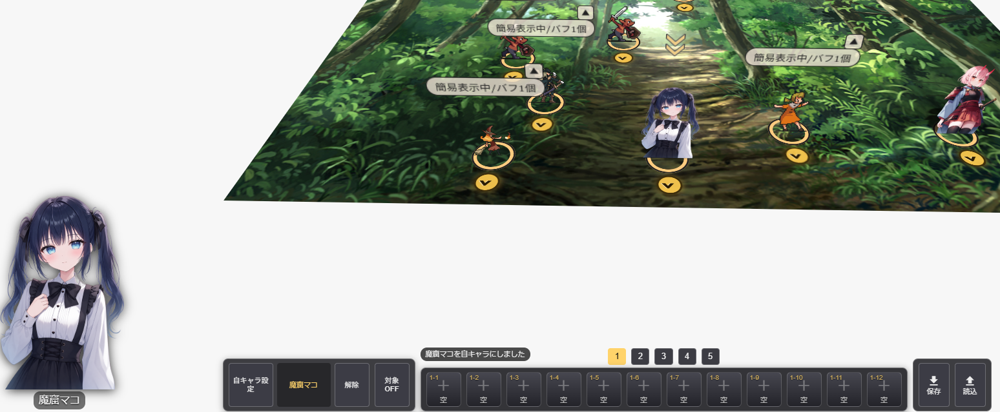
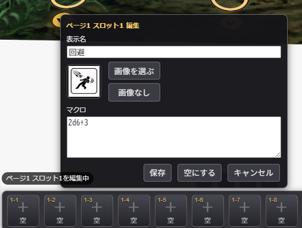
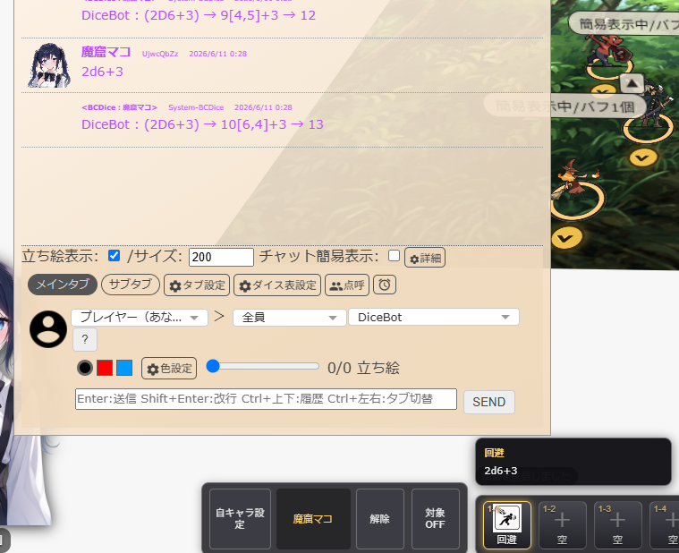
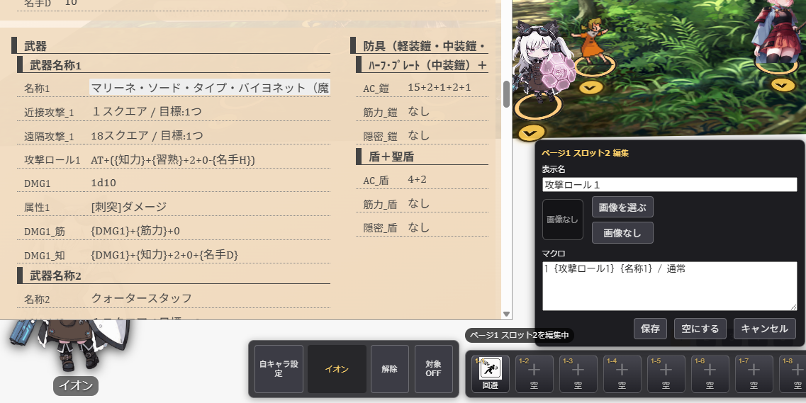
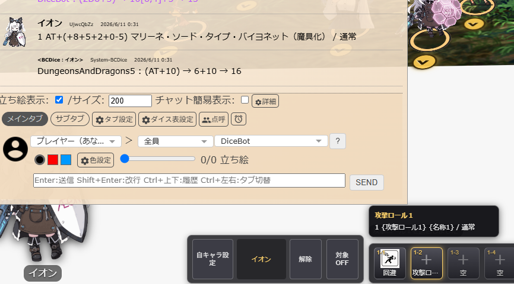

ホットバー
よく使うマクロを登録してクリックで一発発動。
12スロット×5ページ＝最大60個まで登録できます。
ホットバーを表示する
サイドメニューのオプションを開き、「ホットバー」を ON にします。
画面下部に12個のスロットが並んだバーが表示されます。

自キャラを設定する
ホットバーのマクロは、自キャラとして設定されたコマのデータを参照して実行されます。まずは自分が操作するコマを設定しましょう。
コマを Alt + クリック するとメニューが表示されるので、「自キャラに設定」を選択します。

マクロを登録する
ホットバーの空スロットを クリック すると、マクロ編集画面が開きます。
2d6+3）
入力が終わったら登録ボタンを押すと、スロットに表示名と画像が反映されます。
ホットバーを実行する
登録したスロットを クリック するだけでマクロが即座に実行されます。
例えば「回避」スロットをクリックすると、2d6+3 がロールされてチャットに結果が表示されます。

自キャラのデータを使う
マクロには固定値だけでなく、コマに設定された能力値を使ったダイスロールもできます。
コマのチャットパレットで変数を定義しておけば、ホットバーから実行した時にもその変数が展開されます。例えばチャットパレットで以下のように設定しておきます：
AT+(+{AT}+{命中強化}) クォータースタッフ / 通常
このコマンドをホットバーに登録しておけば、クリックするだけで自キャラの能力値が自動計算されてロールされます。

実行結果。自キャラの能力値（AT や 命中強化）が自動で反映されています。

💡 補足情報
スロットの編集・削除
- Windows:
Ctrl+ クリック - Mac:
Cmd+ クリック
編集画面が開き、コマンド内容の変更やスロットのクリアができます。
ページ切替
バーの上部にある 1〜5 のページ番号をクリックしてページを切り替えられます。
マクロのコピー
スロットを 右クリック すると、登録されているマクロのコマンドがクリップボードにコピーされます。
データの保存について
ホットバーのデータはコマ個別のデータではなく、ホットバー独自のデータとして管理されています。自キャラを切り替えてもホットバーの内容はそのまま保持されます。
自キャラとマクロの関係
変数を使ったマクロ（+{AT} など）を実行するには、事前に自キャラを設定しておく必要があります。自キャラが未設定の場合、変数は展開されません。